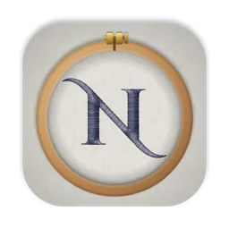
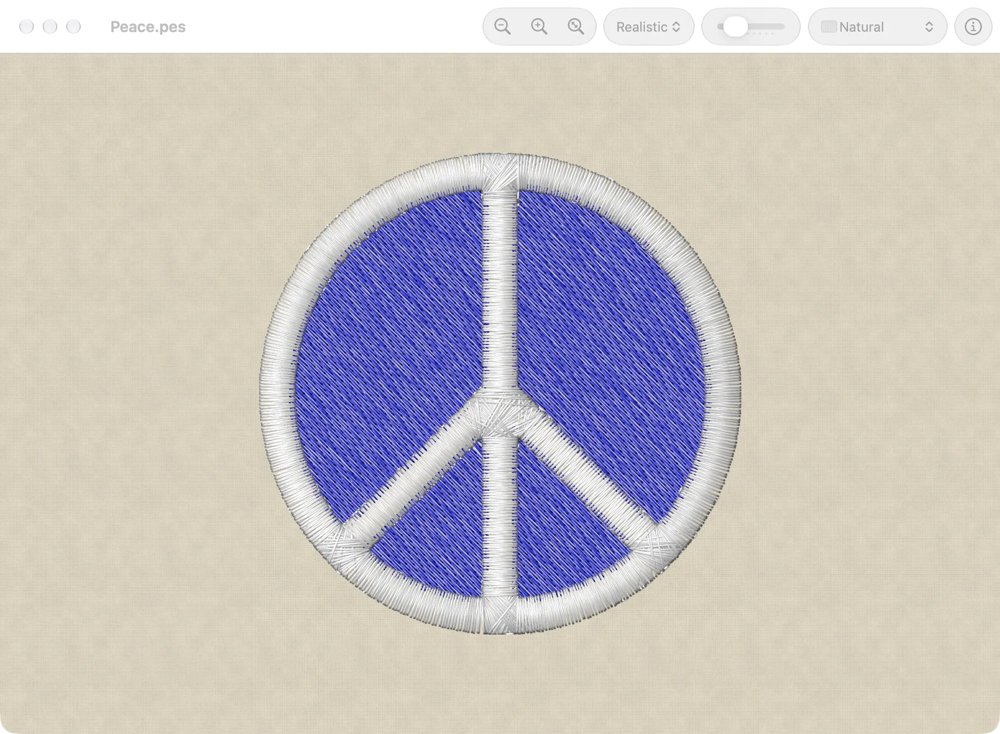
Needle Works opens PES files and shows the stitches in their thread colors. It can print them, and it adds Quick Look previews and thumbnails for PES files in the Finder. It needs macOS 12 or later.
Stitch styles
Each window can show the stitches in one of three styles.
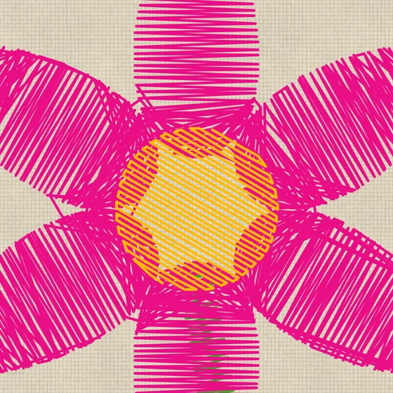
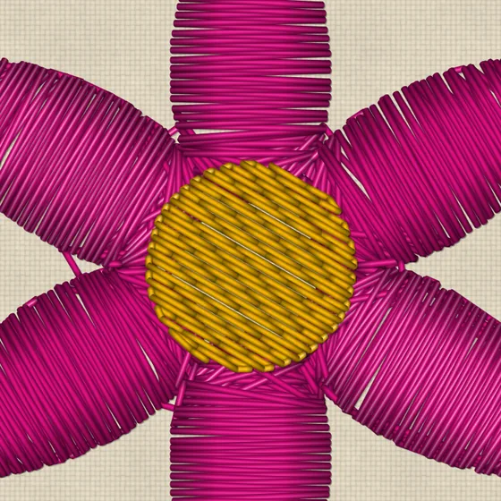
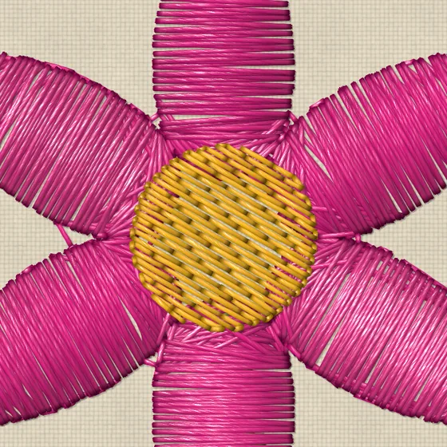
Fabrics
Designs are shown on a woven fabric at its real scale: white, natural, khaki, heather gray, red, forest green, chambray, denim, navy or black, or a plain weave in any color. The texture can be turned off to show a flat color.
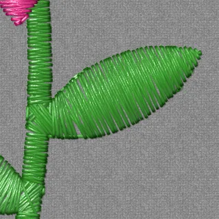
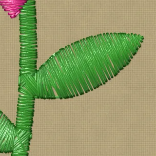
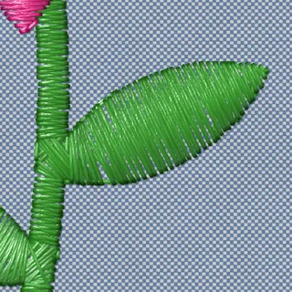
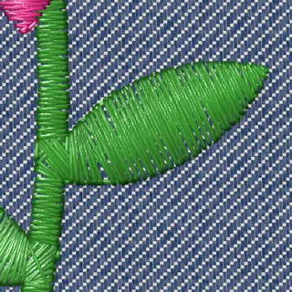
In the Finder
PES files get thumbnails in the Finder, and a preview when you press the Space bar.
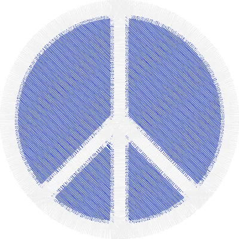
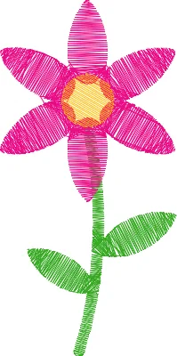
Also
- Jump stitches and trims can be shown or hidden.
- The fabric, stitch style and other choices made for a design are remembered for the next time it's opened. Design files are never changed.
- Designs print at actual size, with a line to check the scale with a ruler, or scaled to fit the page, with a legend of the threads in sewing order.
- The Design Information panel shows a design's size, stitch count, colors and color changes.
Installing
- Download the zip, unzip it, and drag Needle Works to your Applications folder.
- Needle Works isn't notarized by Apple, so the first time you open it, macOS says it can't be opened. Click Done.
- Open System Settings > Privacy & Security, scroll down to the message about Needle Works, and click Open Anyway.
After that, it opens normally.